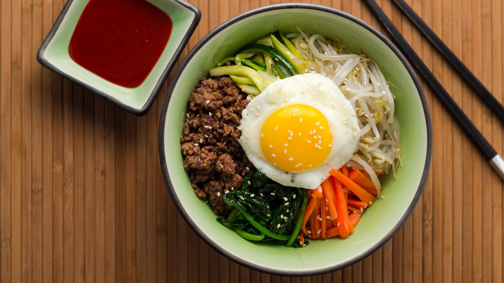

Bibimbap

Description
Bibimbap is a vibrant Korean dish featuring a bowl of warm rice topped with an assortment of sautéed vegetables, marinated meat, a fried egg, and a spicy gochujang sauce, all beautifully mixed together before eating.
Ingredients
- Cooked white rice
- Spinach (blanched and seasoned)
- Carrots (julienned and sautéed)
- Zucchini (julienned and sautéed)
- Mushrooms (shiitake or enoki, sautéed)
- Bean sprouts (blanched)
- Radish (daikon, julienned)
- Ground beef (or tofu for a vegetarian option, marinated)
- Fried egg (sunny-side up)
- Gochujang (Korean red chili paste)
- Sesame oil
- Sesame seeds (toasted)
Steps
- Prepare the Rice: Cook the white rice and keep it warm.
- Sauté the Vegetables: Sauté each vegetable (spinach, carrots, zucchini, mushrooms, and bean sprouts) separately and season with salt and sesame oil.
- Cook the Protein: Marinate and cook the ground beef (or tofu) until fully cooked.
- Fry the Egg: Fry an egg sunny-side up.
- Assemble: In a bowl, layer the rice, vegetables, protein, and top with the fried egg, gochujang, sesame oil, and garnish with sesame seeds and green onions.